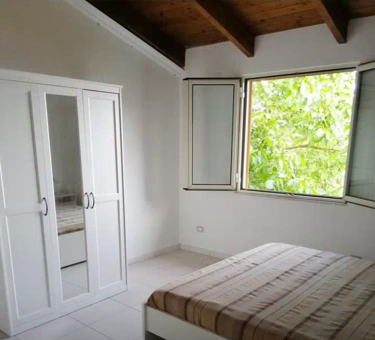
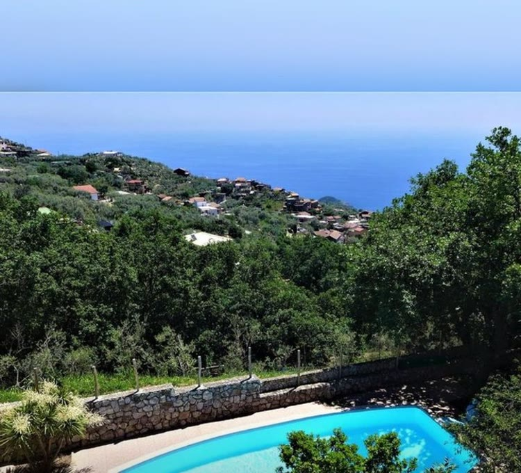
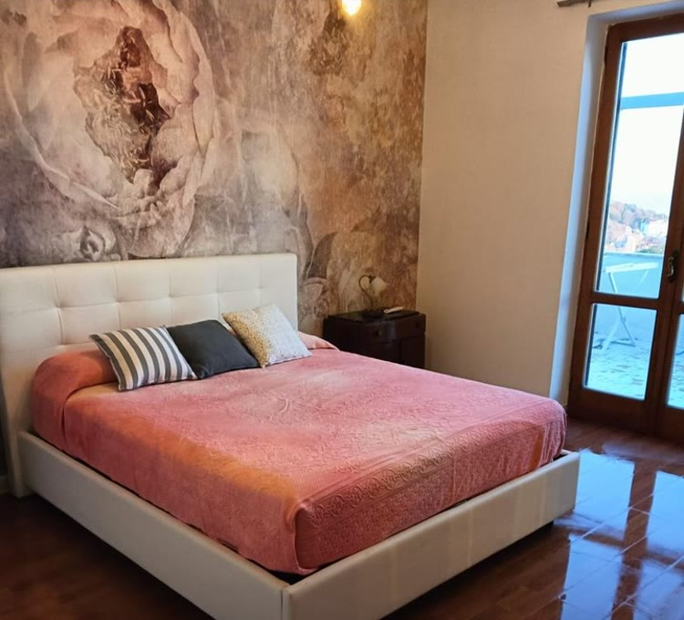
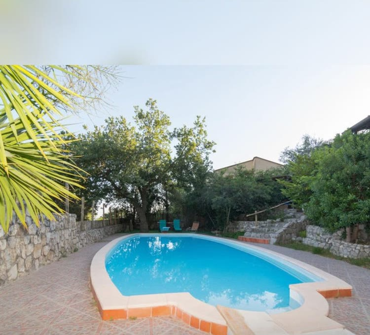
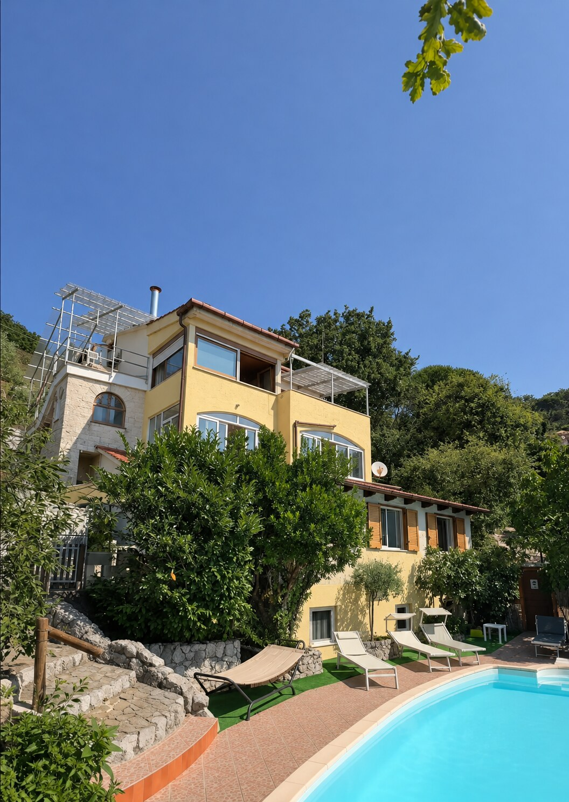

Appartamento sulla piscina
Due camere matrimoniali, un soggiorno con angolo cottura e un bagno. Ingresso indipendente e fino a sei posti letto con due letti singoli aggiuntivi.

Sant’Agata sui Due Golfi
Il Vascello Casa Angela. Appartamenti con piscina, giardino e vista mare.
Gli alloggi

Due camere matrimoniali, un soggiorno con angolo cottura e un bagno. Ingresso indipendente e fino a sei posti letto con due letti singoli aggiuntivi.

Dalla camera matrimoniale si accede alla terrazza, dove puoi fare colazione guardando il mare.
Wi-Fi · Aria condizionata · Parcheggio · Biancheria

Gli spazi all’aperto
Gli ospiti condividono il giardino, l’area barbecue, il forno a legna per le pizze e la piscina. La piscina è stagionale e resta chiusa in inverno.
Penisola Sorrentina
Passa la giornata tra Sorrento, Massa Lubrense e la Costiera Amalfitana. Al ritorno ti aspetta la tranquillità della collina.
Indicazioni e recensioni su Google Maps